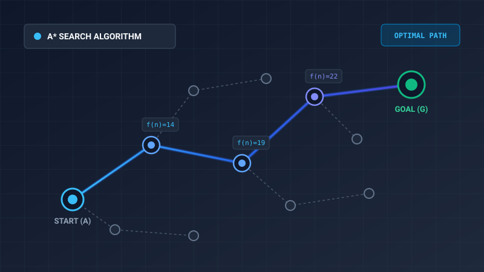
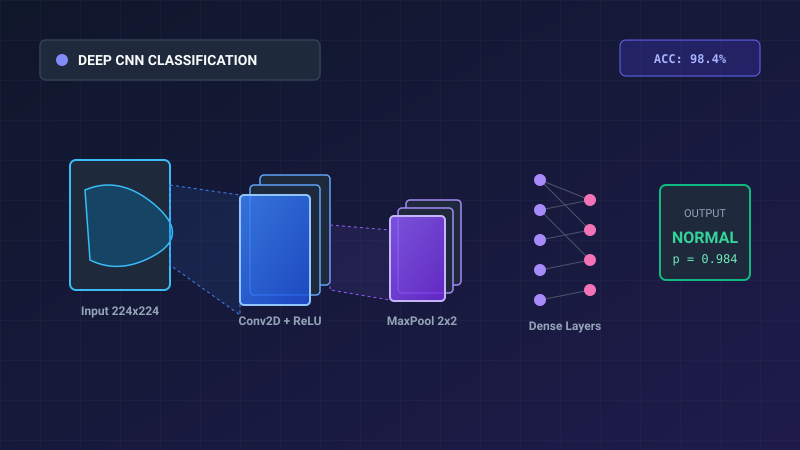

01. Giải Thuật Tìm Kiếm & Pacman Agent
Xây dựng các giải thuật tìm kiếm không mù (DFS, BFS, UCS) và giải thuật có thông tin A* với hàm Heuristic Manhattan để dẫn đường tối ưu cho Pacman.
Xem chi tiết đồ án
→

02. Phân Loại Hình Ảnh Y Tế Với Deep CNN
Thiết kế mô hình Convolutional Neural Network sử dụng PyTorch để chẩn đoán tổn thương phổi từ ảnh X-quang, đạt độ chính xác 98.4% trên tập kiểm thử.
Xem chi tiết đồ án
→

03. Tác Tử Học Tăng Cường Trong GridWorld
Ứng dụng thuật toán Q-Learning và Value Iteration giúp tác tử tự học cách né bẫy, vượt chướng ngại vật và tối đa hóa điểm số tích lũy sau 500 chu kỳ thử nghiệm.
Xem chi tiết đồ án
→